Assignment 3: Deployment and Integration of AI Agents¶
Student Name: Yang Zhanxiang
Student ID: ZY2557211
Submission Date: 2026.5.29
Objective¶
The goal of this assignment is to deploy and test AI agents in different environments. I tested an online model API, a local model through Ollama, and an AI assistant integrated into VS Code.
1. Online Agent¶
Tools Used¶
API provider: Alibaba Cloud Model Studio
Online model: Qwen Plus
Script:
online_file_agent.pyTask: Analyze a Markdown file and answer a specific question
Setup and Process¶
First, I created an API key in Alibaba Cloud Model Studio. The API key was not shown completely in the screenshot for security reasons.
{kind=link}
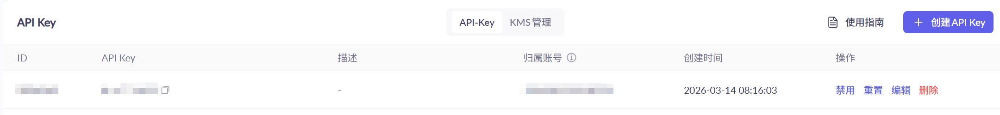
I also checked that Qwen-related models were available in my account.
{kind=link}
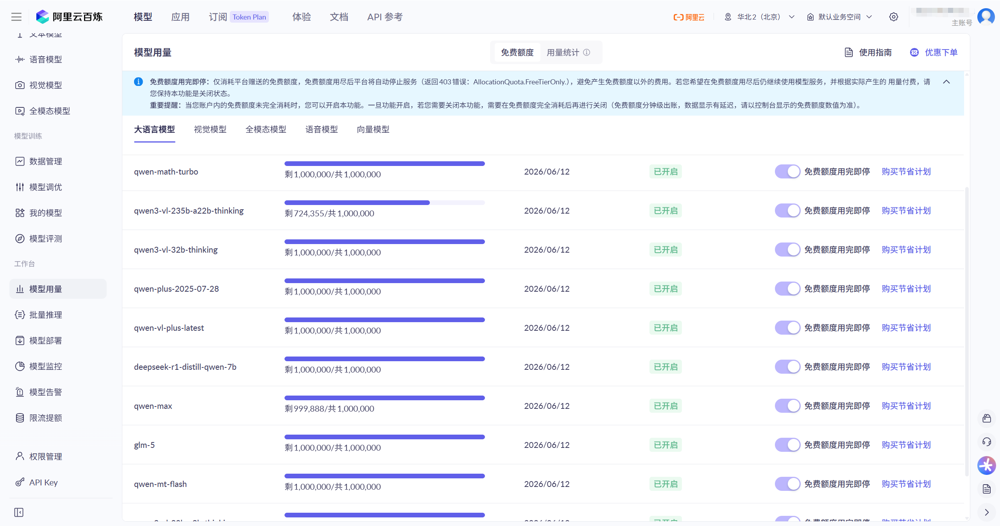
Then I wrote a Python script to use the OpenAI-compatible API of Alibaba Cloud. The script reads a Markdown file, sends its content and a question to the Qwen model, and prints the model response.
The main steps of the script are:
Read the API key from the
DASHSCOPE_API_KEYenvironment variable.Read the target Markdown file with UTF-8 encoding.
Send the file content and question to the
qwen-plusmodel.Print the answer returned by the online model.
I ran the script with this command:
.\.venv\Scripts\python.exe online_file_agent.py docs-web\source\assignment_1.md "Summarize this report and list its main technical points."
The result shows that the online agent successfully analyzed assignment_1.md and summarized the report.
{kind=link}
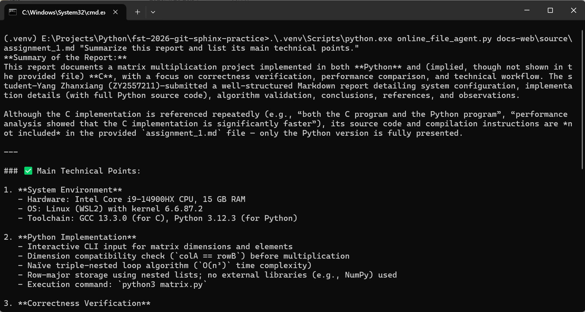
{kind=link}
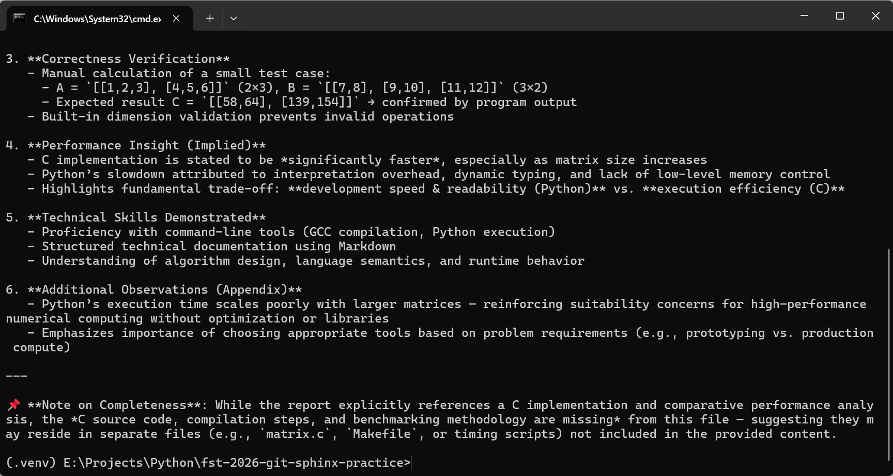
Notes¶
The online model was easy to use after the API key and Python dependency were configured. One small issue was that Windows command line output had an encoding problem, so I added UTF-8 output configuration in the script.
2. Local Model Deployment¶
Tools Used¶
Tool: Ollama
Local model:
qwen3:8bInterface: Ollama desktop UI and local server
Setup and Process¶
I installed Ollama on my computer and selected qwen3:8b as the local model.
{kind=link}
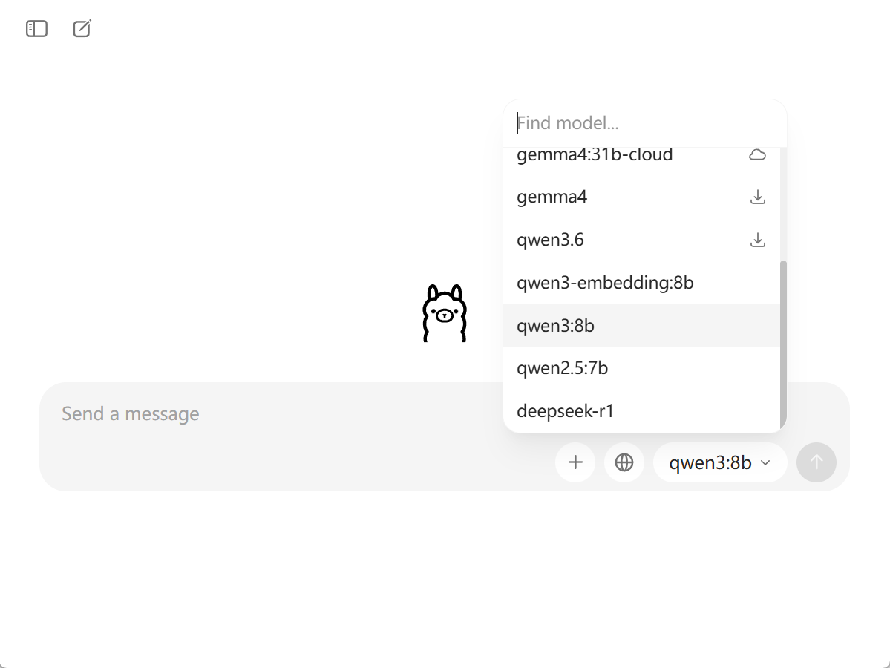
I also checked that the Ollama local server was running at localhost:11434.
{kind=link}
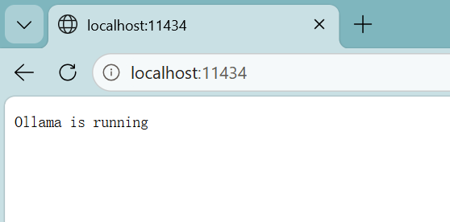
After that, I tested a basic interaction with the local model in the Ollama interface.
{kind=link}
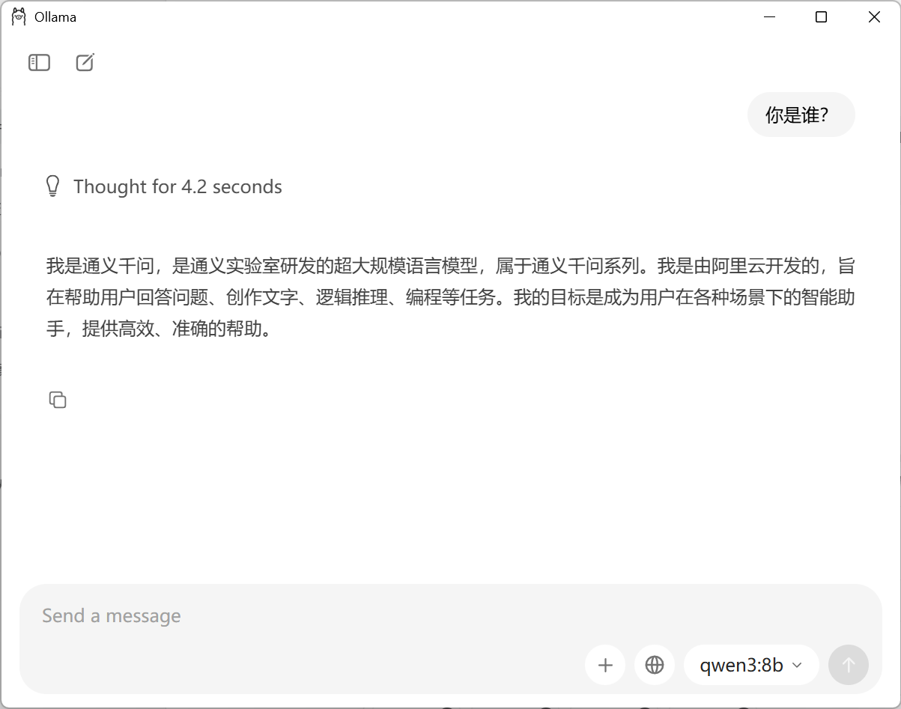
Notes¶
The local model can answer questions without using an online API. This is useful for privacy and local testing. However, compared with the online model, the local model may depend more on the computer’s hardware and may respond more slowly for larger tasks.
3. IDE Integration¶
Tools Used¶
IDE: Visual Studio Code
Extension: Continue
Model provider: Ollama
Model:
qwen3:8bTask: Explain a Python script inside the coding environment
Setup and Process¶
I installed the Continue extension in VS Code.
{kind=link}
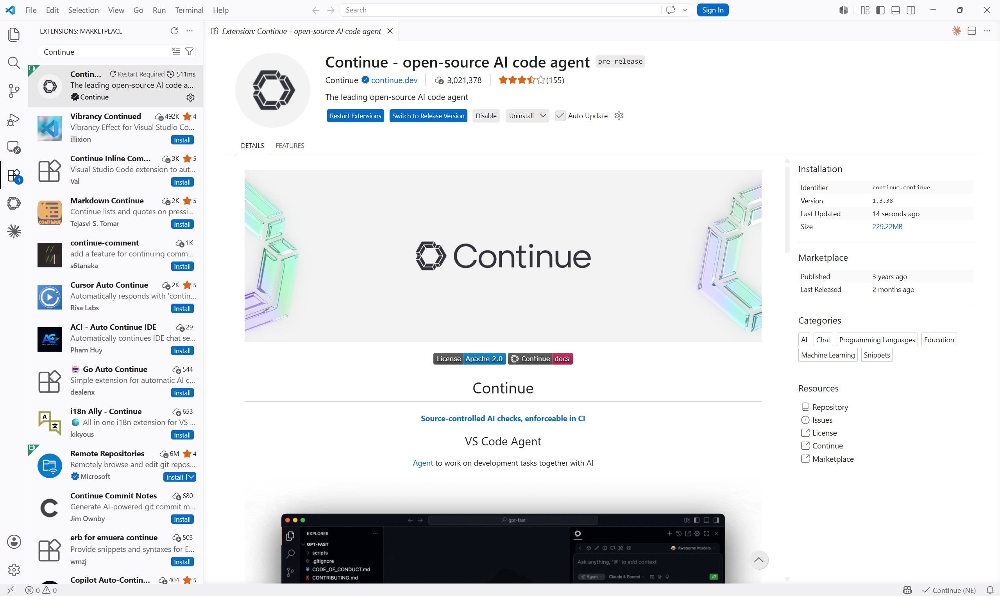
Then I opened my course project folder in VS Code.
{kind=link}
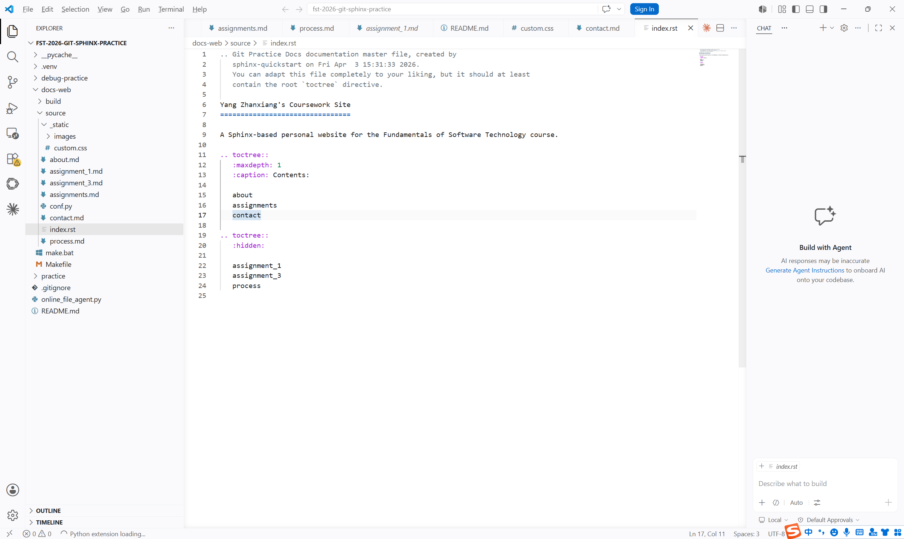
I configured Continue to use the local Ollama model. The configuration used provider: ollama, model: qwen3:8b, and apiBase: http://localhost:11434.
{kind=link}
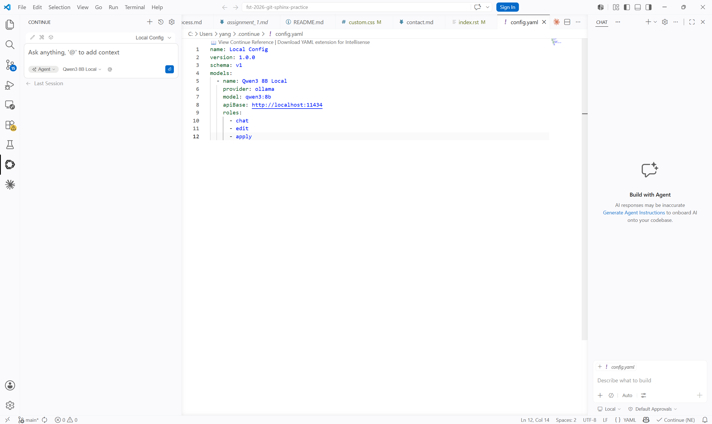
Finally, I opened online_file_agent.py and asked Continue to explain how the script reads a Markdown file and calls the Qwen online model API.
{kind=link}
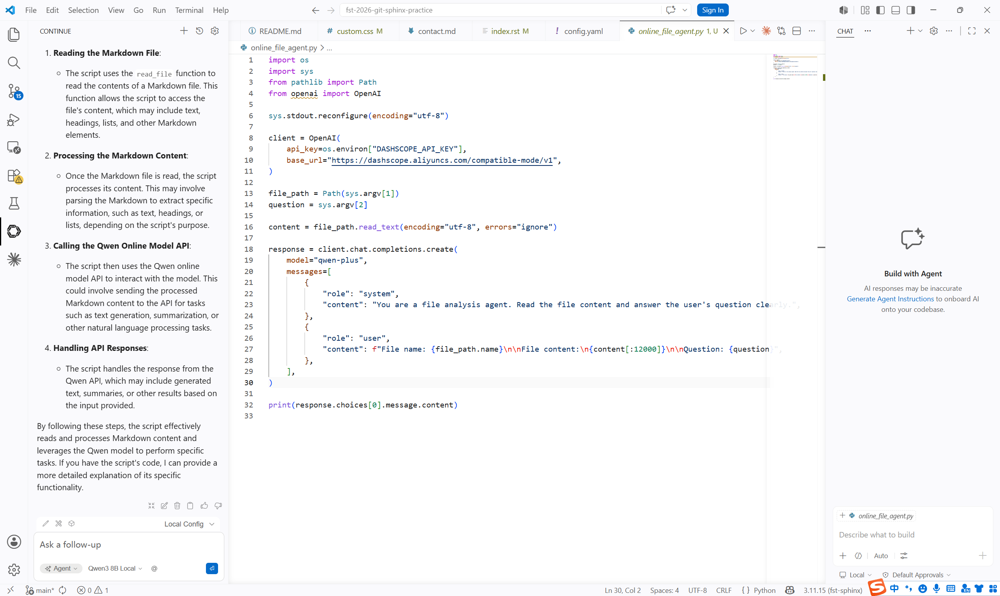
Notes¶
This shows how an AI assistant can be integrated directly into the development environment. It is more convenient than using a separate chat window because the assistant can work with the current project and code file.
4. Reflection¶
Online Model¶
The online Qwen model was convenient and gave a detailed answer. It was suitable for file analysis and summarization. The main requirement was configuring the API key correctly.
Local Model¶
Ollama made it possible to run a model locally. This is useful when I want to test simple prompts without relying on an online service. The limitation is that the performance depends on the local computer.
IDE Integration¶
The VS Code and Continue integration was useful because I could ask questions while looking at the source code. It helped me understand the structure of online_file_agent.py and how the API call was organized.
5. Conclusion¶
In this assignment, I learned how to use an online model API, deploy a local model with Ollama, and integrate an AI assistant into VS Code. The online model was stronger for detailed analysis, while the local model was easier to use privately. IDE integration was helpful for understanding and improving code during development.